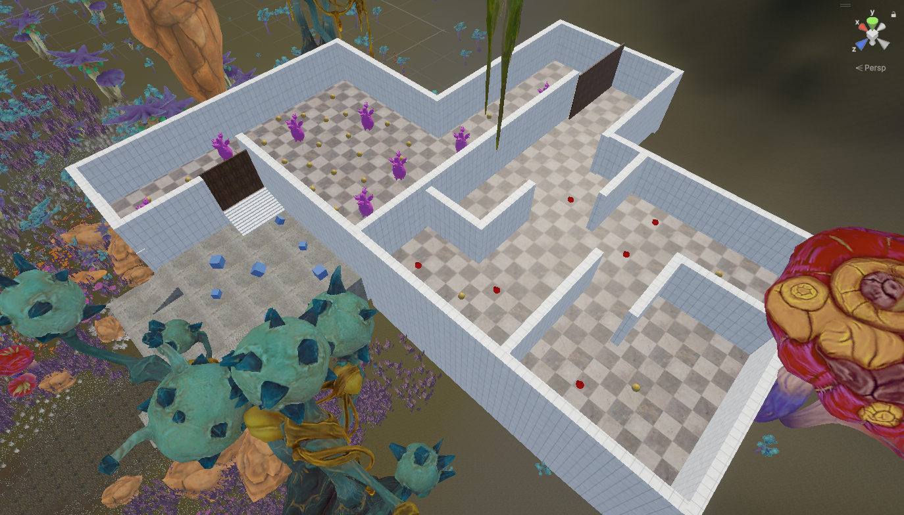
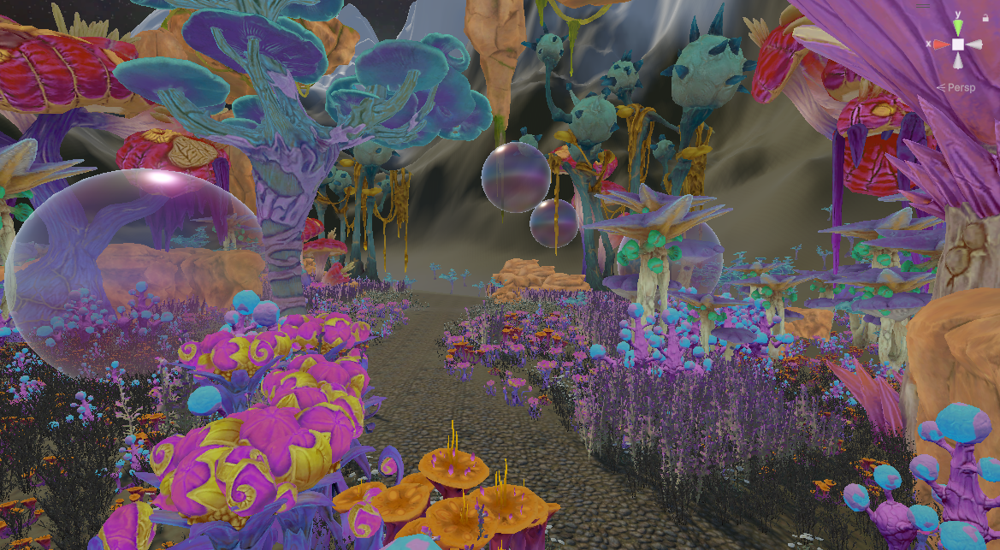
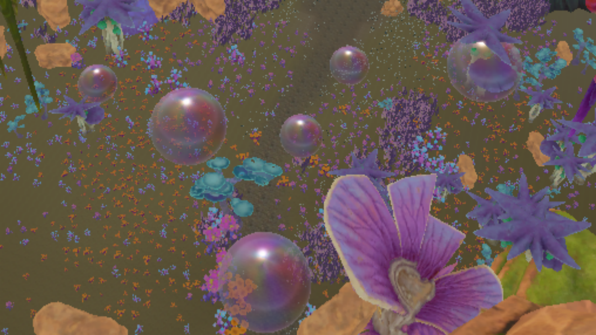
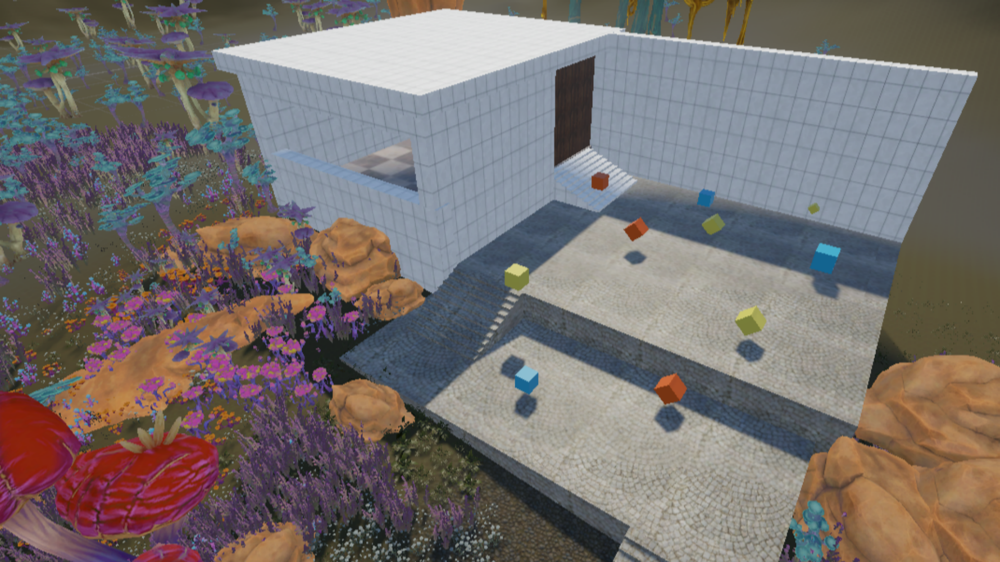
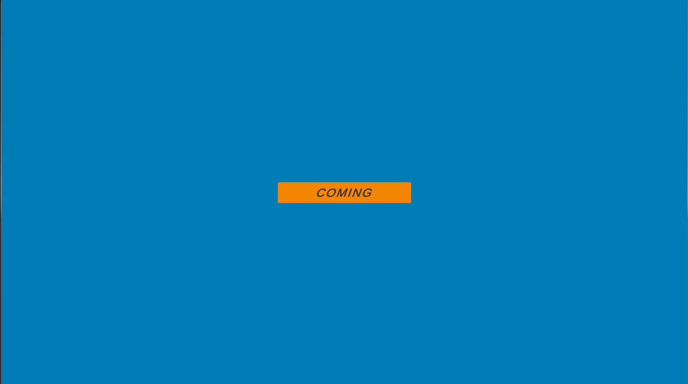

Concept : shoting and escaping
This escape game utilizes virtual environments drawn from a previous virtual world. The entire setting features highly saturated colors, creating a vivid and exaggeratedly colorful virtual realm. Within this world, the flora is bizarre in appearance and uniquely colored; the bubbles floating throughout the environment may look dreamy and harmless, but they are, in reality, hidden bombs—upon contact, they begin to glow and expand in size. The room constructed in the center of the scene features a simple architectural design, serving to demarcate the boundaries between the various levels. This title functions as a mini-game within the shooter genre, where players achieve final victory by eliminating obstacles, dodging hazards, and engaging in combat with NPCs. The total playtime for a complete playthrough is capped at ten minutes, making for a simple yet slightly intense gaming experience.

Process : Build the game sections
This game is a room-escape puzzle game. Each level features unique escape conditions and traps, requiring players to proceed by following the text hints displayed on the screen. Additionally, every stage is subject to a time limit; players must successfully escape the room within the allotted time to advance to the next level, continuing this process until they achieve final victory.
Game References


Key steps in the building the game room:
- 1.Define Levels:
- 2.Each level's details:
- 3.Decoration: Adding decorative elements to enhance the visual appeal and thematic consistency of the world.
- 4.Setting the sample game: Adding intricate details to the exterior of the heart, such as simulating uneven outer surface lines, to enhance realism.
- 5.UI system:
When defining the game levels, my initial intention was simply to create a game centered around destroying cubes. However, after completing the testing phase for this segment, I realized that the game's inherent replayability was quite low. Consequently, I began conceptualizing the content for the subsequent levels. I did not want the game to become overly difficult; thus, while the first level focused on destroying obstacles, for the second level, I sought to introduce a new mode of interaction with those obstacles—specifically, having the player evade them instead. Furthermore, the difficulty of the second level is slightly higher than the first, as the obstacles within this second environment are dynamic and mobile. In designing the third level, I introduced NPC enemies; this raised the difficulty of the level-completion conditions compared to the previous stage, thereby enhancing the overall replayability of the game.


The skeletal details of the dream world were designed to add a sense of mystery and intrigue to the environment. These details include intricate structures and formations that resemble bones, skulls, and other skeletal elements, which are integrated into the terrain and architecture of the world. The skeletal details serve as visual cues that hint at the history and lore of the dream world, suggesting a past filled with ancient creatures, forgotten civilizations, and hidden secrets. By incorporating these skeletal details, the dream world takes on a more immersive and captivating atmosphere, inviting players to explore and uncover the stories behind these enigmatic structures.


The decorative elements of the dream world were carefully chosen to enhance the visual appeal and thematic consistency of the environment. These elements include fantastical plants, glowing mushrooms, floating bubbles, and other whimsical details that contribute to the surreal and enchanting atmosphere of the world. The decorations were designed to complement the overall aesthetic of the terrain and environment, creating a cohesive and immersive experience for players. By adding these decorative elements, the dream world becomes a vibrant and captivating space that invites exploration and sparks the imagination.


The sample game is set in a futuristic world where players can explore a symbiotic heart that is powered by plant energy. The heart is a massive structure that serves as the central hub of the game, and players can navigate through its various chambers and corridors to uncover its secrets. The heart is surrounded by a skeletal structure that provides support and protection, while also serving as a visual representation of the fusion between biology and technology. As players explore the heart, they will encounter various challenges and puzzles that require them to interact with the environment and utilize their skills to progress. The game aims to create an immersive experience that combines elements of science fiction, fantasy, and adventure, while also exploring themes of symbiosis, sustainability, and the potential of future technology.

The UI system of the dream world game is designed to provide players with an intuitive and immersive interface for navigating the game's mechanics and features. The UI includes elements such as health bars, inventory screens, and interactive prompts that allow players to manage their resources, track their progress, and interact with the environment. The design of the UI is consistent with the overall aesthetic of the game, featuring a futuristic and organic style that complements the surreal nature of the dream world. The UI system is also designed to be responsive and adaptive, providing players with a seamless experience as they explore the various chambers and corridors of the symbiotic heart.
